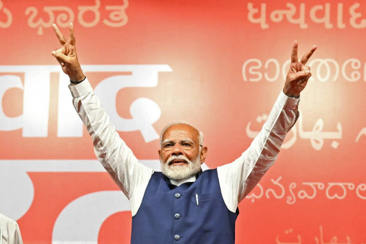

Why BJP Rules India – Political Analysis & Leadership Impact
Published Date : August 18, 2025
India’s largest political machine—by membership and reach—has retained a structural edge through a mix of leadership brand, ideological consolidation, cadre-driven execution, and welfare-led delivery. Below is a concise, ground-focused explainer of why the BJP continues to dominate national contests.
1) Leadership: The Modi Factor
Narendra Modi remains BJP’s biggest force multiplier—high recall, disciplined messaging, and a reputation for delivery. The leadership brand often outperforms local incumbency, anchoring nationalized campaigns that cut across regions and communities.
2) Ideology: Identity and Nationhood
Rooted in Hindutva and cultural nationalism, the BJP frames a story of unity, security, and national resurgence. Landmark moves (e.g., Article 370, temple construction) feed into a long-term narrative of civilizational confidence.
Read a backgrounder on origins in History of BJP.
3) Organization: RSS Cadre and Micro-Execution
A vast local network—RSS-linked volunteers and BJP workers—powers door-to-door canvassing, rapid feedback loops, and booth-level discipline. This ground game often proves decisive in close seats.
4) Welfare and Delivery: DBT at Scale
Flagship schemes—Ujjwala, PM-Kisan, Ayushman Bharat, PM Awas, Jal Jeevan—create direct touchpoints via DBT rails. Visibility plus predictable benefits lift satisfaction among women, first-time beneficiaries, and low-income households.
See also: BJP Welfare Schemes.
5) Data-Driven Campaigns
Targeted messaging, constituency analytics, and content factories keep BJP’s narrative coherent across platforms. From WhatsApp clusters to issue-specific creatives, the party sustains a 24x7 campaign posture.
6) Social Coalition and Caste Arithmetic
Beyond traditional bases, BJP has methodically stitched alliances with non-dominant OBCs, Dalit sub-groups, and newer aspirational blocs. EWS reservation and local representation widen appeal in competitive states.
7) Security and Geopolitics
A firm posture on national security and high-visibility operations shape perceptions of competence. Foreign policy signaling and infrastructure push reinforce the image of a decisive state.
Context: defense signaling analysis in Operation Sindoor.
8) Opposition Fragmentation
Rival parties often suffer from leadership churn, messaging gaps, and alliance friction. Where the opposition synchronizes caste math and local issues, results tighten—see our explainer: Why BJP Lost in Ayodhya.
Risks and Constraints
- Jobs & inflation: Economic anxieties can erode support in urban-peripheral belts.
- Local incumbency: Candidate selection and grievance redress remain pivotal.
- Delivery variance: Last-mile gaps blunt welfare dividends in swing booths.
Conclusion
BJP’s dominance is not accidental—it’s the product of brand leadership, ideas, organization, and execution. The party’s 2025 edge endures where national narrative meets local delivery; it narrows when opponents align caste coalitions with credible on-ground solutions.
Further reading: History of BJP • Why BJP Lost in Ayodhya • All Articles